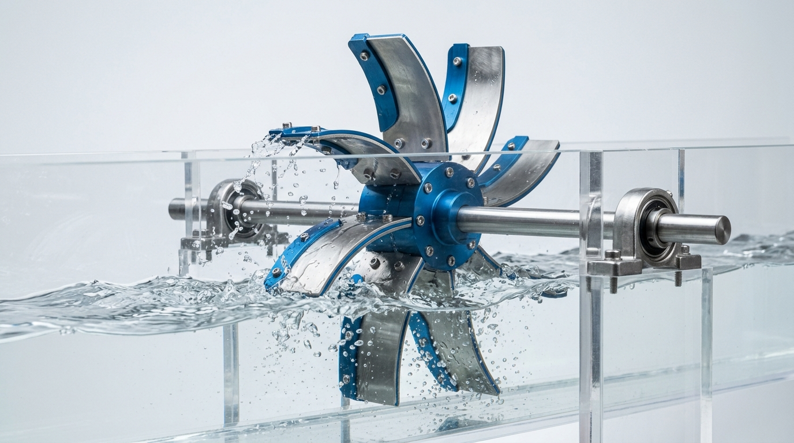

01 · Sirkulasi
01 · Sirkulasi
Pompa Celup Wasser WD-101E
1 unit · 220 V / 50 Hz, daya input 100 W. Menyedot air dari tangki penampung bawah Ø 520 mm dan mendorongnya secara kontinu naik menuju bak penenang atas.
Lihat Cara Kerja ▸Proyek Mekanika Fluida berbasis pembangkit mikro-hidro mini untuk aliran rendah. Kami merancang sistem pusaran air sirkulasi tertutup yang mengubah energi aliran sederhana menjadi listrik bersih tanpa bendungan besar.
Kami merancang ulang cara memanfaatkan aliran air ber-head rendah. Di atas rangka laboratorium 2,0 × 0,8 meter dengan sirkulasi tertutup, Vortex Hydro memfokuskan energi kinetik aliran ke kincir 6 sudu dan transmisi step-up 1:4 untuk membangkitkan listrik DC secara bersih tanpa bendungan besar.
Enam komponen utama pembentuk siklus aliran tertutup dan konversi energi listrik pada simulator Vortex Hydro.
01 · Sirkulasi
1 unit · 220 V / 50 Hz, daya input 100 W. Menyedot air dari tangki penampung bawah Ø 520 mm dan mendorongnya secara kontinu naik menuju bak penenang atas.
Lihat Cara Kerja ▸
02 · TurbinDiameter 330 mm dengan lebar sudu 250 mm pada poros utama stainless steel Ø 30 mm. Menangkap energi kinetik aliran dari saluran miring untuk menghasilkan torsi mekanik.
Lihat Cara Kerja ▸ 03 · Pembangkit
03 · Pembangkit
1 unit generator magnet permanen yang dipasang di zona kering di balik sekat pelindung cipratan, mengubah putaran mekanis turbin menjadi arus listrik DC stabil.
Lihat Cara Kerja ▸ 04 · Transmisi
04 · Transmisi
Sistem step-up mekanik menggunakan pulley poros Ø 270 mm ke pulley generator Ø 67,5 mm untuk menaikkan kecepatan putaran empat kali lipat pada zona kering.
Lihat Cara Kerja ▸ 05 · Beban Output
05 · Beban Output
2 unit lampu LED 12 V berdaya 5 W per unit (total beban 10 W) yang disuplai melalui baterai 12 V dan pengontrol pengisian sebagai indikator langsung daya terbangkit.
Lihat Cara Kerja ▸ 06 · Perpipaan
06 · Perpipaan
1 set jalur pipa dorong berdiameter ±45 mm di atas rangka 2,0 × 0,8 m lengkap dengan flow meter digital untuk memantau debit aliran menuju headbox.
Lihat Cara Kerja ▸Banyak aliran air kecil punya tinggi jatuh rendah sehingga tidak bisa memutar turbin biasa. Turbin vortex memakai pusaran air di dalam basin untuk mengubahnya menjadi listrik, tanpa bendungan.

Bekerja pada tinggi jatuh yang kecil, cocok untuk aliran yang tidak sanggup memutar turbin biasa.
Konstruksi mudah dan murah dirawat, sehingga mudah dipelajari dan diperbaiki.
Tidak memerlukan bendungan besar; pusaran terbentuk di dalam basin.
Cukup untuk penerangan dan pompa kecil di kawasan pedesaan.
Memanfaatkan aliran kecil tanpa pekerjaan sipil berskala besar.
Rancangan terbuka untuk dipelajari oleh kelas berikutnya.
Simulasi fluida, pemodelan 3D, perhitungan matematis, dan pengembangan web terintegrasi.


Perangkat atau browser Anda belum mendukung WebGL. Anda tetap dapat mempelajari sistem melalui diagram interaktif.
Buka Cara Kerja Sistem →Vortex Hydro adalah simulator PLTA mikro-hidro skala laboratorium. Air mengalir memutar kincir, kincir menggerakkan generator, dan hasilnya menjadi listrik. Di bawah ini, ikuti perjalanan air langkah demi langkah.
Lihat bagaimana setiap komponen bekerja.
Air dari bak penenang atas mengalir masuk ke saluran miring menuju kincir.
Jawaban singkat untuk pertanyaan yang paling sering muncul.
Simulator PLTA mikro-hidro berbasis pusaran air skala laboratorium yang dirancang, dibangun, dan diuji secara mandiri oleh mahasiswa Universitas Negeri Malang.
Putaran kincir dinaikkan 1:4 lewat pulley, lalu memutar generator DC XD 3240 yang mengubahnya menjadi listrik DC.
Air jatuh ke ember penampung di bawah, lalu pompa 100 W menyedotnya dan mengalirkannya lewat pipa kembali ke bak penenang atas. Siklus ini berulang terus.
Karena aliran sungai tidak mungkin dibawa ke laboratorium kampus, pompa Wasser 100 W menyirkulasikan air secara kontinu di atas rangka 2 × 0,8 m.
Tidak. Konsep turbin pusaran dirancang khusus untuk memanfaatkan aliran ber-head rendah tanpa bendungan besar.
Debit aliran (Q), tinggi jatuh (H), serta efisiensi mekanis turbin dan generator (η) sesuai persamaan P = ρ·g·Q·H·η. Anda dapat mencobanya melalui Kalkulator Daya pada menu alat di pojok kiri bawah.
Pada versi situs statis, Dashboard memakai mesin simulasi prototipe di browser untuk mendemonstrasikan antarmuka pemantauan sambil menunggu integrasi sensor prototipe fisik asli.
Buka ikon kunci Login Admin pada menu alat di pojok kiri bawah, lalu masuk menggunakan akun Administrator terverifikasi. Dashboard dan Riwayat Chat AI hanya dapat diakses oleh pengguna dengan peran Administrator.
Persiapan, kolaborasi lintas disiplin, eksperimen laboratorium, dan kisah nyata di balik perancangan hingga uji coba prototipe Vortex Hydro.
Satu perjalanan kolaboratif lintas pengurus inti dan enam divisi teknis.

Kami adalah perancang — membangun sistem pembangkit listrik mikro-hidro pusaran air di Fakultas Vokasi, Universitas Negeri Malang. Kolaborasi lintas disiplin menjadi inti kami, menyatukan pengurus inti dan tujuh divisi teknis dari simulasi fluida, mekanikal, kelistrikan, hingga perangkat lunak.
Pantau telemetri prototipe turbin pusaran, laporan harian, dan riwayat percakapan Vortex Hydro AI dalam satu ruang kerja terverifikasi.
Memuat percakapan 24 jam terakhir…
| Waktu | Admin | Aksi | Target |
|---|---|---|---|
| Memuat audit log… | |||
Ketik minimal 2 huruf. Pintasan: Ctrl+K atau tombol /.